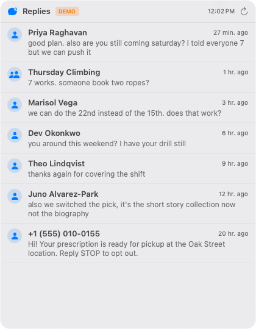
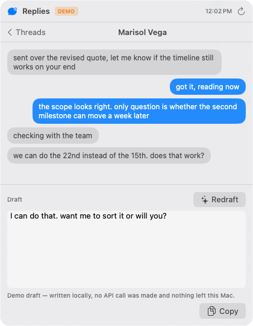
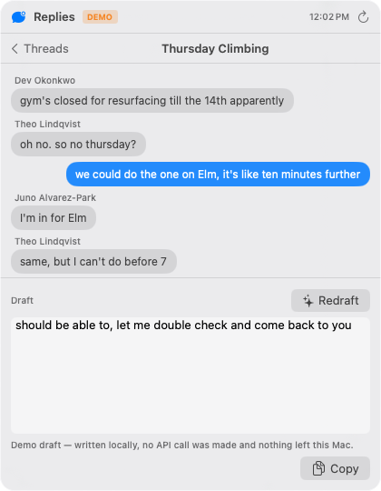
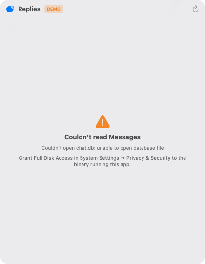

A menu-bar app that reads your Messages history locally, lists every conversation whose last message is not from you, and drafts a reply that sounds like you wrote it. Sold as Swift source.
Read this before the features. This app reads your entire private message history, and when you press Draft it sends the open conversation — including what the other person wrote — plus a sample of your own recent outgoing messages from every conversation, to OpenAI. The people in those threads never agreed to that. If that is not a decision you want to make on their behalf, do not buy this.
Measured
1,335lines of Swift across 7 files
0third-party dependencies — 5 Apple imports only
1network destination in the whole codebase
0tests — there is no test suite at all
Four screens

Every conversation waiting on you, newest first. A thread appears here when its most recent message is not from you — the read/unread flag is ignored entirely, because that clears the moment you glance at a notification.

A thread with a drafted reply. The footer states that this particular draft was written locally in demo mode and that no API call was made — the app labels what is and is not model output.

Group threads name each speaker, so a draft can answer the right person. A chat counts as a group when it has more than two participants.

What you see before granting Full Disk Access: a named error and the exact setting to change, rather than an empty list that looks like you have no messages.
What you should know before buying
Every screenshot here is synthetic. Names, numbers and messages are invented; numbers are in the 555-01xx range reserved for fiction. The orange DEMO badge is the app's own indicator that it is not reading a real database. No real conversation appears in any listing image, and none ever should.
It was never compiled or run during packaging. There is no Mac here, no Swift toolchain and no Xcode. That the build succeeds, the menu-bar item appears, or a draft comes back from OpenAI are the author's claims, not measurements. What was verified: the four SQL statements were executed for real against a generated database, and the exact outbound request was assembled and inspected.
There is no test suite. Zero XCTest hits.
Full Disk Access is required, it is not scoped to Messages, and it is the same switch that would let any app read most of your home folder.
You bring your own OpenAI key and OpenAI bills you directly. Without a key the app still works as a read-only thread browser.
Nothing is redacted before sending. No filtering of addresses, card numbers or anything else that happens to be in a thread. REPLIES_MAC_STYLE_LIMIT=0 turns off the cross-thread style sample; nothing turns off sending the open thread.
No telemetry and no analytics — one network call site in the entire codebase, and it fires only when you press Draft.
No support, no auto-send, no scheduling, no iPhone app.
Get it
Replies — complete Swift source for macOS — $12
SwiftPM, no third-party packages. swift build -c release, or scripts/make-app.sh for a bundled Replies.app.